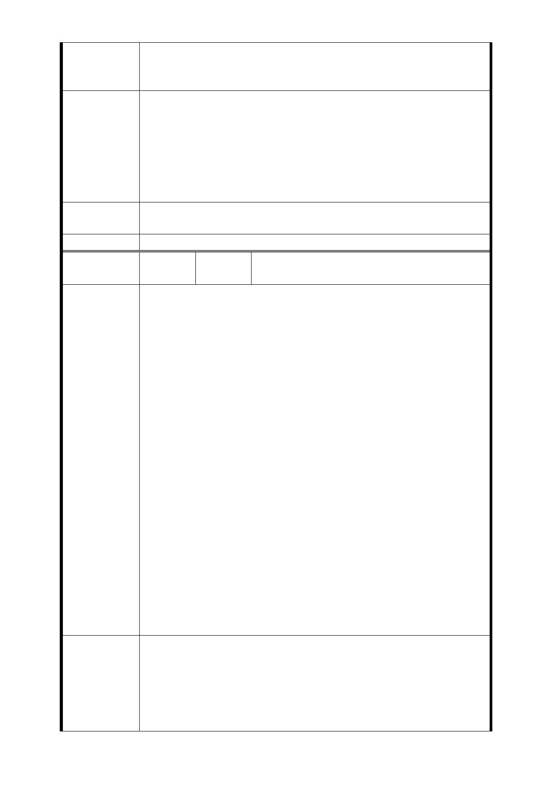

要在自己的土地上，三代同堂安養終老．無法再承受被捷運
局繼續精神折磨，請准予剔除位置在基地最左邊角落（地號
-799）得聯開名單。
四、我們只要簡易型的出入口，設置於加寬停車格上，台北
市處處可見這種 2.4 米寬簡易型的電扶梯出入口。｛如果捷運
局評估說：不可行｝也不能強拆民房當出入口，建議單邊設
建 議 辦 法 出入口於南側，取消北側出入口的設置，既能節省經費，又
不引發民怨，是最好的良策。
PS：審議會議時，務必通知相關權利關係人與會，陳述陳情
意見。
市府回應
意見
同編號捷五－1 回應意見。
委員會決議 同編號交一－1 委員會決議。
編
號 捷五-59
陳情人
捷運萬大線 LG03 站捷五預定開發用地住
戶自救會會長：宋○彬
陳情書
主旨：重申全面反對萬大線 LG03 站萬大路、西藏路交叉口東
北側（捷五用地）變更為聯合開發區（捷）反對縮小面積聯
開的提案。附上 8 成以上反對聯署書一份，請儘快定案取消
（捷五聯開案），請查照。
建議：將捷運出入口縮最小面積，設置於加寬停車格。比照
蘆洲線東門站 1 號出入口，2.4 米寬單向電扶梯的設計（附圖
說明），如果｛評估不可行｝，請單邊設出入口於南側，取消
北側出口。儘快定案取消（捷五聯開案），恢復居民平靜的日
子。
陳情理由
說明：
一、 全面反對聯開，不分大小面積，反對強制徵收，全力
守護家園。
二、 在 101 年 4 月 27 日，於臺北市都市計畫委員會審議時
，絕大部分住戶就已經強烈表達反對聯開的立場。請
以加寬人行道合併停車格的空間，來設計簡易型的出
入口。是我們住戶最大的底線與共識。
三、 萬大路、西藏路交叉口東北側是住宅區，並不是商業
區，本站也不是轉乘交會站，旅客數並沒有那麼多。
因此只要簡易型出入口，設置於加寬停車格空間就好
，否則請取消北側單邊設出入口於南側。
建議：
一、西藏路現有人行道空間 2.4 米，停車格 2 米＋縮減車道
建議辦法
0.4 米，即可設置一個像蘆洲線東門站 1 號，單向電扶梯 2.4
米寬的出入口（附圖 B1）捷運設施既是設在公有地，居民就
沒有反對的立場，阻力最小。
二、萬大路、西藏路交叉口，陸橋今年已拆除。拆除的樓梯
- 107 -